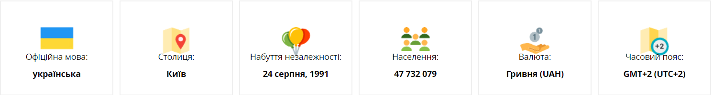
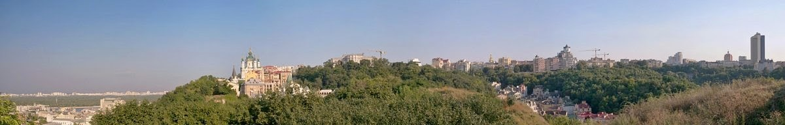

Загальні дані
Україна – найбільша країна в Європі. Країна з багатою та різноманітною культурою, батьківщина всесвітньо відомих митців та літераторів. Хочете дізнатись більше про минуле та сьогодення України? У цій статті ви знайдете цікаві факти та посилання на ресурси, які допоможуть вам пізнати сучасну Україну.
Розташування: Центрально-Схiдна Європа, південно-східна частина Східноєвропейської рівнини, між 44”20′ і 52”20′ північної широти і 22”5′ і 41”15′ східної довготи.
Площа: 603 700 км2
Клімат: переважно помірно континентальний.
Середня зимова температура від -8° до -12° C (від +17.6° F до +3° F). В південних областях зимова температура коливається близько 0° C (+32° F).
Середня літня температура становить від + 18 ° до + 25 ° C (від + 64,4 ° F до + 77 ° F), хоча максимальна температура може бути вище + 35 ° C (+ 95 ° F).
Найкращий час для відвідування України: літо, пізня весна та рання осінь.
Основний інтернет-домен: ua
Телефонний міжнародний код: 380
Культура
Часто кажуть, що Україна розташована між Сходом та Заходом. Дійсно, українська культура – це яскраве поєднання культур різних народів, які проживали і проживають на території України. Саме це робить її такою цікавою.
Офіційний веб-сайт України Ukraine.ua розкаже вам про сучасний український театр, архітектуру, фотографію, літературу, музику, модні тенденції в одязі, візуальне мистецтво, кінематографію та графічний дизайн. На сайті ви можете знайти інформацію про майбутні культурні та спортивні події, фестивалі, а також список музеїв та галерей, які варто відвідати. Україні є що показати світові.
Однією з найрізноманітнішою та інноваційною сферою української культури є музична індустрія. Відкрийте для себе українську музику та її ритми на міжнародному шоу-фестивалі Waves Vienna. У 2020 році на фестивалі було представлено шість українських груп. Давайте також слухати джаз на фестивалі афроамериканської та імпровізованої музики Am I Jazz. Цей щорічний фестиваль акцентує контрасти та паралелі між новою акустичною та електронною музикою.
Однією з найрізноманітнішою та інноваційною сферою української культури є музична індустрія. Відкрийте для себе українську музику та її ритми на міжнародному шоу-фестивалі Waves Vienna. У 2020 році на фестивалі було представлено шість українських груп. Давайте також слухати джаз на фестивалі афроамериканської та імпровізованої музики Am I Jazz. Цей щорічний фестиваль акцентує контрасти та паралелі між новою акустичною та електронною музикою.
Якщо ви шанувальник класичної музики, ви точно будете вражені меморіальним концертом, присвяченим Джозефу Роту, відомому журналісту та прозаїку. Концерт відбувся у його рідному місті Броди (Львівська область) та зібрав понад 200 артистів з усього світу.
Історія
Україна – це держава зі славним і, водночас, трагічним минулим. Люди різних національностей долучилися до творення її історії. Також Україну формують спадщини різних держав, до яких вона колись входила, перш за все Австро-Угорщини, Російської імперії та Радянського Союзу.
Вступний онлайн-курс “Ukraine: History, Culture, and Identities” розповість вам про основні історичні події України від Середньовіччя до сьогодення. Ви дізнаєтесь про те, як вікінги змінили Східну Європу, про виникнення, розвиток та занепад Київської Русі, вплив Реформації на українські землі, створення уніатської церкви, військову організацію козаків та їх роль у європейських війнах, піднесення культури та мистецтва у 20-ті роки (український модернізм), український досвід Другої світової війни, дисидентський рух у радянський час та розбудову демократії в Україні після розпаду СРСР.
Минуле України – це історія з багатьма голосами. Проєкти «Україна за 2 хвилини» та «10 речей, які кожен повинен знати про Україну» розповідають про культурне та етнічне різноманіття України, визначні історичні постаті (зокрема, українського поета Тараса Шевченка, письменника-модерніста Лесю Українку та кінорежисера Леся Курбаса) та основні історичні події.

Суспільне життя
Бути студентом в Україні – означає мати активне соціальне життя, повне незабутніх моментів, які, очевидно, стануть дорогоцінними спогадами для решти Вашого життя.
Кожен університет має студентське товариство, вся діяльність якого спрямована на поліпшення умов для студентської молоді, як в соціальному житті, так і освітньому процесі.
Студентське товариство постійно проводить різні заходи та конкурси. Особливою популярністю в Україні користуються інтелектуальні змагання. Студенти беруть активну участь в науково -практичних конференціях, де є всі можливості продемонструвати результати своїх досліджень.
-
Спорт
В Україні є всі можливості та умови для заняття улюбленими видами спорту. Великі університети мають свої власні спортивні зали та ігрові майданчики. Найпоширеніші види командного спорту в Україні: футбол, волейбол, баскетбол, теніс, бадмінтон і шахи. В Україні постійно проводяться спортивні студентські турніри. Культура спорту в Україні наразі знаходиться на самому піку популярності. У 2012-му році країна прийняла чемпіонат Європи з футболу, були побудовані та задіяні величезні сучасні стадіони ( “Олімпійський” в Києві, “Металіст” в Харкові і “Арена Львів” у Львові).
Кожне місто має багато тренажерних залів, спортивних комплексів, Ви можете знайти для своїх занять спортом спортзали, за привабливими цінами недалеко від свого помешкання. Не забудьте запитати про знижки для студентів!
-
Туризм
Україна – це країна з величезним потенціалом родючих земель та природи.
Кожен регіон країни має свої унікальні природні та архітектурні пам’ятки, туристичні місця. Ви можете відвідати численні музеї, природні парки та заповідники, і безумовно, отримаєте чимале задоволення. Найбільші міста України: Київ, Харків, Одеса, Львів, Дніпро. Україна приваблює своєю витонченою архітектурою, затишними кафе і ресторанами, а також культурними пам`ятками.
Невелике містечко, що розташоване в Київській області, під назвою Переяслав-Хмельницький, відоме в світі, «як місто музей» – є єдиною унікальною живою колекцією в Україні серед етнографічних музеїв народної архітектури та побуту. Воно має понад 20 різних музеїв, в місті проводяться різні ярмарки, етнічні фестивалі.
Західна Україна зберігає чарівність європейського духу, Ви зможете відвідати стародавні храми, легендарні замки, водоспади і гори, що викликають неповторні емоції та відчуття.
Карпати на зимовий відпочинок запрошують численними гірськолижними курортами, такими як Буковель, Славське, Пилипець. А Шацькі озера Волині, є однією з найбільших озерних груп Східної Європи.
Береги Чорного моря – найпопулярніше місце для відпочиваючих в літній період, а річковий круїз з Києва по Дніпру та виходом до Чорного моря подарує Вам незабутні враження.
Кухня
Українська кухня з її різноманітними смаками та технологіями приготування страв є важливою складовою культурної спадщини країни. Вона відображає особливості регіонів країни та кулінарну спадщину різних етнічних та національних спільнот України.
Борщ (буряковий суп) – найвідоміша українська страва. Кожна українська родина має свій рецепт борщу. Найпоширеніший рецепт включає капусту, моркву, цибулю, картоплю, помідори та м’ясо, хоча борщ може бути і вегетаріанським
Окрім ресторанів та кафе варто відвідати місцеві ринки фруктів, овочів, трав’яних чаїв та домашніх сирів.
Щоб дізнатись більше про сучасну українську кухню, перегляньте книгу “УКРАЇНА. Їжа та історія“. Доступна українською та англійською мовами на веб-сайті Українського інституту, книга включає рецепти страв з усієї країни. Досліджуйте Україну, не залишаючи своєї кухні.
Подорожі
-
Від високих гір Карпат до берегів Чорного моря, від крихітних сіл до великих промислових центрів – Україна є захоплюючим напрямком для подорожей. Окрім чудових пейзажів, Україна має визначні історичні та культурні об’єкти, деякі з яких визнані об’єктами світової спадщини ЮНЕСКО, а саме:
-
• Собор Святої Софії, Києво-Печерська лавра (Київ)
• Ансамбль історичного центру міста (Львів)
• Геодезична дуга Струве (Одеська область)
• Резиденція митрополитів Буковини і Далмації (сьогодні – Чернівецький національний університет імені Юрія Федьковича) (Чернівці)
• Стародавнє місто Херсонес Таврійський та його хора (Севастополь)
• Дерев’яні храми України (Івано-Франківськ, Львів, Закарпатська область)
-
Історія України – це історія українців. Туристичний проєкт Ukraїner 11 мовами розповідає історії про людей, мистецтво та бізнес в Україні.